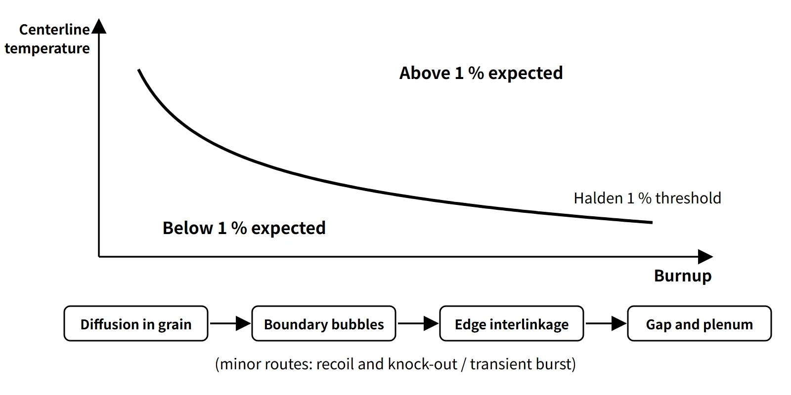

Fuel & Materials · C-FM-011
Fission Gas Release (FGR) — Xe and Kr Escaping Across Grain Boundaries into the Gap
About 25 cm³ (STP) of Xe and Kr is produced per MWd; how much escapes depends on temperature and burnup.
Fission gas release (FGR) is the escape of the inert gases (Xe and Kr) produced inside a UO₂ pellet, via diffusion and the interlinkage of grain-boundary bubbles, into the gap and plenum outside the pellet; the release fraction is expressed as released amount / produced amount (%).
FGR is a phenomenon that takes place inside the rod.
Principle and mechanism
How much gas is produced
In thermal-neutron fission of U-235, the yields of the stable and long-lived Xe (131, 132, 134, 136) and Kr (83–86) add up to about 0.25 atoms per fission (0.25–0.31 in the literature, rising slightly as the share of Pu fission increases). At 200 MeV per fission, 1 MWd corresponds to 2.70×10²¹ fissions, which produce about 25 cm³ (STP: 0 °C, 1 atm) of gas per MWd (this is the amount produced, not released). One standard 17×17 rod (about 1.77 kg of uranium, example) burned to 50 GWd/tU produces about 2.2 L (STP). A release fraction of 1 % means about 22 cm³, and 5 % about 110 cm³, accumulating in a small plenum.
Four steps of the main path and two auxiliary mechanisms
The thermal main path proceeds in sequence.
- Intragranular diffusion: single Xe and Kr atoms dissolved in the grain diffuse to the grain boundary. The diffusion coefficient has the form D = D0·exp(−Q/RT) (T in K), so it is exponentially sensitive to temperature (the Turnbull expression has three terms: thermal, irradiation-enhanced and athermal). Trapping in intragranular bubbles competes with re-solution by fission fragments, and the balance sets the effective migration rate.
- Grain-boundary accumulation and bubble growth: atoms reaching the grain boundary gather into lenticular bubbles that grow. Up to this step the gas stays inside the pellet and shows up as gaseous swelling.
- Interlinkage of edge bubbles: once the fractional coverage of the grain boundaries saturates, bubbles on the grain edges (lines where three grains meet) link up into tunnels.
- Release through open paths: when the tunnels reach crack surfaces or the pellet surface, the gas escapes into the gap and plenum. Release jumps the moment steps 3 and 4 open, so FGR shows threshold behavior.
There are two auxiliary mechanisms.
- Recoil and knock-out (athermal release): atoms produced within the fission-fragment range (a few to 10 μm) of the pellet surface fly out directly, or surface atoms struck by fragments are knocked out. The dependence on thermal activation is weak and the amount is small (roughly below 1 % in a PWR in normal operation), so its relative share is large in low-temperature operation.
- Burst release: gas accumulated on the grain boundaries comes out all at once, during a power ramp because of the temperature rise, and during power reduction or shutdown cooling because of grain-boundary microcracking.
The size effect in step 1 is summarized by the characteristic time a²/D (a: grain radius). For constant production rate and constant D, the Booth equivalent-sphere model gives, as a short-time approximation, the fraction reaching the grain surface f ≈ 4√(D′t/π) − (3/2)D′t (D′ = D/a²) (for post-irradiation annealing tests with only an initial inventory, 6√(D′t/π) − 3D′t). Reaching the grain surface is not the same as release into the rod, but under the same diffusion conditions larger grains mean less release, which is the basis for large-grain pellets.
![Rendered block of UO2 grains with grain-boundary bubbles and edge tunnels, marked with four numbered steps of the thermal release path: diffusion inside the grain with D equal to D0 exp(-Q/RT), grain-boundary accumulation and bubble growth, interlinkage of edge bubbles, and release through open paths into the gap and plenum; cards for the minor routes, recoil and knock-out (athermal, usually below 1 percent) and burst release in transients; and a yield bar: 1 MWd equals 2.70×10^21 fissions times about 0.25 Xe plus Kr gives about 25 cubic centimetres STP per MWd, about 2.2 litres for one 17×17 rod at 50 GWd/tU](../../assets/images/concepts/c-fm-011-fission-gas-release/fig1-fgr-pathway.webp)
If the same gas stays trapped in the pellet, it is gaseous swelling; if it escapes, it is FGR.
What it means in a plant
The threshold temperature falls as burnup rises
The empirical correlation derived from centerline-thermocouple and internal-pressure instrumented rods in the Halden reactor (Vitanza et al., 1979) gives the threshold separating 1 % FGR as Bu = 0.005·exp(9800/Tc) (Bu in MWd/kgUO₂, Tc the centerline temperature in °C). Converting with Bu (MWd/kgUO₂) = 0.8815 × Bu (GWd/tU) gives:
| Burnup (GWd/tU) | 5 | 10 | 20 | 30 | 50 | 70 |
|---|---|---|---|---|---|---|
| 1 % threshold centerline temperature (°C) | 1,445 | 1,311 | 1,200 | 1,143 | 1,079 | 1,040 |
The rule of thumb "FGR above about 1,200 °C" holds only up to around 20 GWd/tU. At high burnup the threshold drops to around 1,050 °C, and because the UO₂ thermal conductivity falls with burnup, the centerline temperature itself rises at the same linear power. The overlap of these two effects is why FGR increases in high-burnup fuel. The correlation was derived from relatively low-burnup rods, however, so design uses the validated models of fuel performance codes.
![Graph of fuel centerline temperature from 900 to 1,600 degrees Celsius against burnup from 0 to 80 GWd/tU showing the calculated Halden 1 percent FGR threshold, 1,311 degrees at 10, 1,143 at 30, 1,079 at 50 and 1,040 at 70 GWd/tU, dashed beyond 40 as an extrapolation, with the correlation Bu = 0.005 exp(9800/Tc); bars of pure-gas thermal conductivity at 600 K, He 0.245, Kr 0.017 and Xe 0.011 W/m·K (He/Xe about 22 times); and a diagram of the two feedbacks, lower gap conductance raising fuel temperature and internal pressure causing clad lift-off](../../assets/images/concepts/c-fm-011-fission-gas-release/fig2-fgr-threshold.webp)
Two feedbacks created by the released gas
- Lower gap conductance: when Xe and Kr mix into the He fill gas, the gas thermal conductivity drops sharply. At 600 K the pure-gas values are about 0.245 W/m·K for He, 0.017 for Kr and 0.011 for Xe, so He conducts about 22 times better than Xe (calculated with MATPRO-type correlations). The real gap gas is a He-Xe-Kr mixture and hgap also depends on composition, gap width and contact condition, but while the gap is open there is a positive feedback: hgap↓ → fuel temperature↑ → FGR↑. Once the gap is closed and contact conduction dominates, the effect is smaller.
- Internal pressure and lift-off: if released gas raises the internal pressure above the coolant pressure (PWR 15.5 MPa), the cladding can creep outward. If the rate of increase of the cladding inner radius (outward creep) exceeds that of the pellet outer radius (swelling), the closed gap reopens (clad lift-off), giving an unstable loop: lower conductance → temperature↑ → FGR↑ → pressure↑. That is why the design criterion looks not at the pressure itself but at "no lift-off during normal operation (rate of cladding inner-radius increase by creep ≤ rate of pellet outer-radius increase by swelling)".
Accidents, transients and the high-burnup rim
The gas and volatile nuclides collected in the gap and plenum (the gap inventory) are the first release source in a LOCA or fuel handling accident. Many hold that the high-burnup rim structure (HBS) at the pellet periphery traps gas in micrometre-sized pores and adds little release in normal operation, but in RIA and LOCA transients it becomes a source of transient release together with fine fragmentation. Ramp-rate limits suppress burst release as well as PCI.
Countermeasures
- Temperature control: peak linear power limits, ramp-rate limits
- Pellets: large-grain and Cr₂O₃-doped pellets (larger diffusion distance a)
- Rod design: plenum volume, optimized He fill pressure, low-corrosion cladding to secure internal pressure margin
- Analysis: end-of-life internal pressure, lift-off and stored energy evaluated with fuel performance codes that include FGR models
Regulatory and design criteria
The criteria below are examples from the United States (US NRC).
| Basis | Key point |
|---|---|
| 10 CFR 50 App. A GDC 10 | Margin to specified acceptable fuel design limits (SAFDLs) in normal operation and anticipated operational occurrences |
| NUREG-0800 SRP 4.2 (Rev. 3, 2007) | Rod internal pressure: no cladding lift-off during normal operation, no radial reorientation of hydrides, evaluation of DNB propagation from overpressure |
| 10 CFR 50 App. K | Pre-LOCA stored energy and temperature calculation (FGR reflected in the gap gas composition) |
| NRC RG 1.236 (2020) | Cladding failure criteria for control rod ejection; transient FGR included in the internal pressure calculation |
| NUREG-2121 (2012) | Fuel fragmentation, relocation and dispersal and transient FGR in high-burnup LOCA |
The threshold correlation and the release mechanism are long established. What has changed in recent years is that the high-burnup RIA criteria (RG 1.236, 2020) and LOCA fragmentation research have increased the regulatory weight of transient FGR and internal pressure, and the current rod internal pressure criterion is framed as "no lift-off" rather than "internal pressure < system pressure".
Easily confused pairs
| Fission gas release (FGR) | Gaseous FP swelling | Failed-rod leakage | |
|---|---|---|---|
| Where the gas goes | Pellet → gap and plenum | Stays in the pellet (intra- and intergranular bubbles) | Gap → coolant |
| Precondition | Occurs in intact rods | Intact rods | Through-wall cladding defect |
| Governing factors | Temperature, burnup, transients | Temperature, burnup | Defect size, gap holdup |
| Result | Higher internal pressure, lower hgap, accident source term | Larger pellet volume, PCMI | Higher coolant activity (I, Xe) |
Key points at a glance
- Definition: Xe and Kr produced in UO₂ pellets are released outside the pellet (gap and plenum); release fraction = released / produced.
- Production: Xe + Kr about 0.25 atoms per fission ≈ 25 cm³ (STP)/MWd.
- Thermal main path: intragranular diffusion (D ∝ exp(−Q/RT), Booth model) → grain-boundary accumulation and bubble growth → edge bubble interlinkage → release through open paths (threshold behavior).
- Athermal: recoil and knock-out from the surface layer; weak thermal activation, small amount (larger share at low temperature).
- Transients: burst release on power rise, reduction or shutdown cooling (grain-boundary microcracking).
- Threshold: Halden 1 %, Bu = 0.005·exp(9800/Tc); about 1,310 °C at 10 GWd/tU → about 1,080 °C at 50 GWd/tU.
- Effects: higher internal pressure, lower gap gas conductivity (pure He/Xe about 22 times) → temperature feedback, lift-off, accident source term.
- High burnup: lower thermal conductivity raises temperature; rim (HBS) pore gas → transient release in RIA and LOCA.
- Countermeasures: linear power and ramp-rate limits, large-grain and doped pellets, optimized plenum and He fill pressure.
- Regulation: GDC 10 (SAFDLs), SRP 4.2 rod internal pressure (no lift-off: cladding radius increase rate ≤ pellet radius increase rate), RG 1.236.
